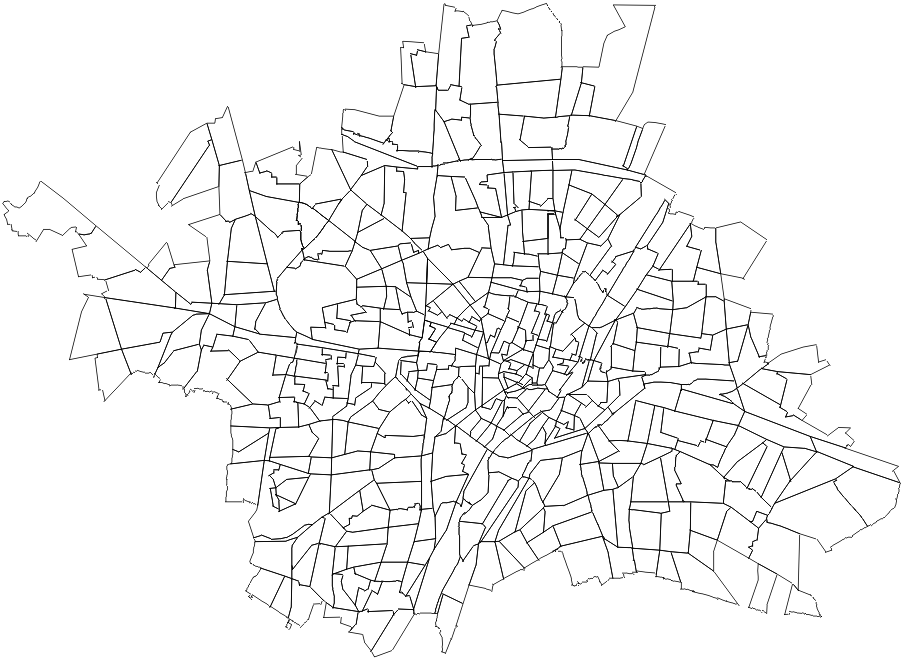
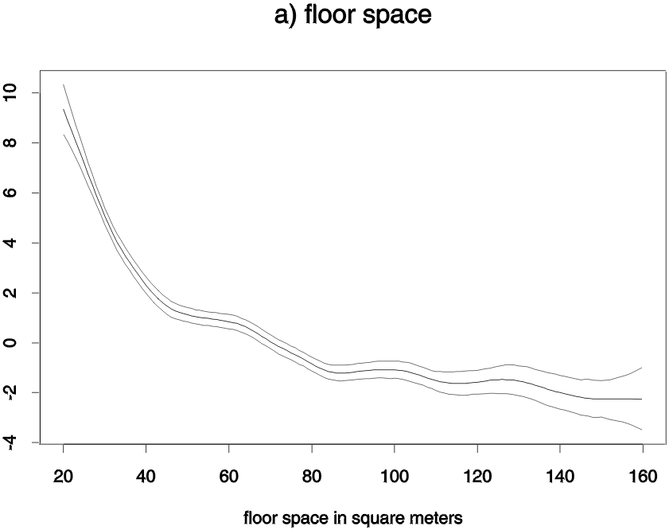
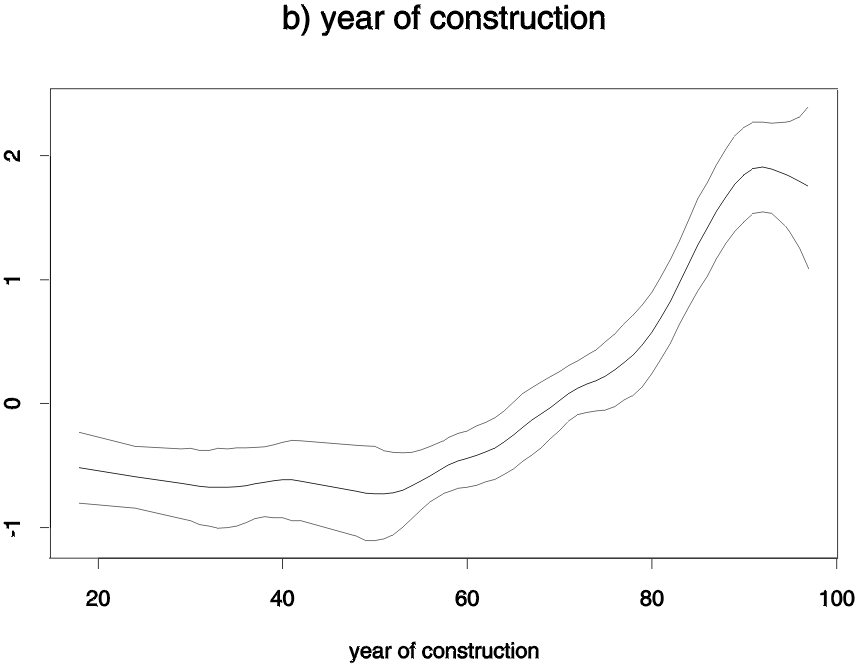

| BayesX |
| Home |
| What is BayesX? |
| New features |
| Download |
| Bugs |
| Examples |
| Tutorials |
| Maps |
| Examples - Munich rents for flats | ||||||||||||||||||||||||
|---|---|---|---|---|---|---|---|---|---|---|---|---|---|---|---|---|---|---|---|---|---|---|---|---|
The response variable is
Covariates characterizing the flat were constructed from almost 200 variables out of a questionnaire answered by tenants of flats. In the following reanalysis, we include 27 covariates. Here is a selection of some typical covariates:
For the official Munich '99 rental guide, location in the city was assessed in three categories (average, good, top) by experts. In the present analysis we let the data decide about location and therefore incorporate a structured spatial random effect. Hence we estimate a parameter for each subquarter (L) in Munich, where the parameters are subject to the restriction that neighboring sites are more alike than others. A map of Munich divided into subquarters can be found in the Figure below. 
We estimated an additive model with predictor p = f1(F) + f2(A) + f3(L) + fixed effects.
The model has been estimated with BayesX using the following program code: delimiter = ; dataset rent; rent.infile using c:\data\munich99.raw; map munich; munich.infile using c:\data\munich.bnd; bayesreg b; b.regress R = F(rw2) + A(rw2) + L(spatial,map=munich) + H + B + E + K + W + S + O + R + N , family=gaussian iterations=12000 burnin=2000 step=10 using rent; delimiter = return; The first and the second statement in the program code are used to create a dataset object 'rent' and to read in the data, which are stored in the external ASCII-file 'c:\data\munich99.raw'. In the following two statements a map object 'munich' is created and the map of Munich is stored therein. The map of Munich is used later for estimating the structured spatial random effect of covariate location L. Finally, a so called bayesreg object is created and a Bayesian regression model is estimated using the regress command of bayesreg objects. Estimated effects can be found in the following Figures and map. They can be created using the graphics capabilities of BayesX.

 
ReferencesMore details on the present analysis can be found in the following sources:
|